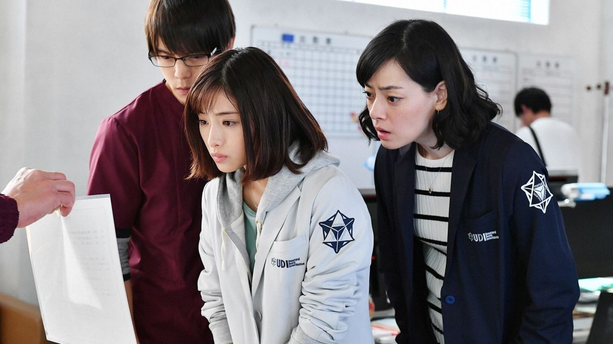

저의 다양한 취향을 다같이 파헤쳐봐요!
★HOBBY
<드라마 보기>
저는 드라마 보는 것을 굉장히 좋아합니다.
개인적으로는 일주일마다 방영일을 기다리는 것보다
다 끝난 드라마를 몰아서 보는 걸 더 좋아해요.
☆추천 드라마
1. 언내추럴 (일본드라마)

부자연스러운 사인으로 사망에 이른 사람들의 억울한 죽음 뒤에 있는 진실을 풀어나가는
법의학 수사 드라마이며 일본드라마 특유의 따뜻한 분위기가 인상적인 작품입니다.
2. 부부의 세계

"사랑에 빠진 게 죄는 아니잖아!" 라는 명대사를 남긴 드라마...(유뷰남이라면 당연히 죄 맞다.)
가정을 두고 바람을 핀다는 꽤 자극적인 주제의 드라마이기는 하지만 자극적인만큼 시간 가는 줄 모르고 봤습니다.
<영화 보기>
저는 드라마뿐만 아니라 영화도 무척 즐겨봅니다.
영화감독의 다양한 의도를 추측하며 영화 속에 숨겨진 의미를 파악하는 게 정말 즐거워요!
가장 좋아하는 감독은 박찬욱 감독입니다. 저를 박찬욱 감독에게 빠지게 만든 결정적인 작품은 바로~

올드보이(OLDBOY)
엄청난 결말로 저에게 충격을 준 영화입니다. 혹시나 안 보신 분들을 위하여 스포는 하지 않겠습니다. 꼭 보세요!
♪♬ 제가 이 영화에서 가장 좋아하는
음악 입니다. ♪♬
♥좋아하는 연예인
저는 좋아하는 연예인이 굉장히 많은데요
(조인성, 한지민, 전지현, 현빈 등등... )
고민하고 또 고민해서 딱!! 두 명만! 골라봤습니다.
1. 한소희
혹시 익숙한 얼굴이신가요? 네 맞습니다! 전페이지에서 제 사진 대신 배우 한소희의 사진을 넣었었어요.
또한, 앞서 추천해드린 드라마 "부부의 세계"에서 여다경 역을 맡은 배우이기도 하답니다.
사실 그 드라마를 보고 입덕한 거예요. 드라마에서 너무 예뻐서 미워할 수가 없겠더라고요...
하루쯤은 한소희의 얼굴로 살아보고 싶네요...
▶한소희 instagram
2. 장동윤

요즘 제가 빠진 배우입니다! 원래 무쌍보단 유쌍을 좋아하는 저였지만... 이 남자는 특별해요!
사실 장동윤은 원래 한양대에 다니는 평범한 대학생이었는데, 길거리에서 강도를 잡고 뉴스에 나오면서
잘생긴 얼굴로 화제가 되어 지금 연예기획사에 캐스딩되었습니다.
이 남자... 너무 완벽해서 안 좋아할 수가 없었어요.
▶장동윤 소속사 instagram
※마무리
여기까지 저의 취향을 낱낱이 파헤쳐보았습니다!
더 궁금한 게 있으시다면
박세은의 instagram
여기로 연락주세요~ 읽어주셔서 감사합니다!